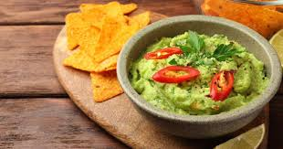

Sobremesas
Bolo de Chocolate

Um delicioso bolo de chocolate para adoçar seu dia!
- Ingredientes:
- 2 xícaras de farinha de trigo
- 1 xícara de açúcar
- 1/2 xícara de cacau em pó
- 1 xícara de leite
- 3 ovos
Modo de Preparo: Misture todos os ingredientes e asse por 30 minutos a 180°C.
Pratos Principais
Frango ao Curry

Uma receita exótica e cheia de sabor!
- Ingredientes:
- 500g de peito de frango
- 1 cebola picada
- 2 colheres de sopa de curry
- 1 lata de leite de coco
Modo de Preparo: Cozinhe o frango com os temperos e adicione o leite de coco.
Aperitivos
Guacamole
Um acompanhamento perfeito para suas refeições!
- Ingredientes:
- 2 abacates maduros
- 1 tomate picado
- 1 cebola roxa picada
- Suco de 1 limão
Modo de Preparo: Amasse os abacates e misture os outros ingredientes.